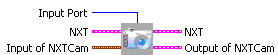
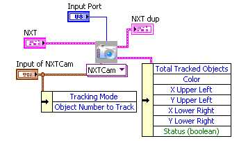
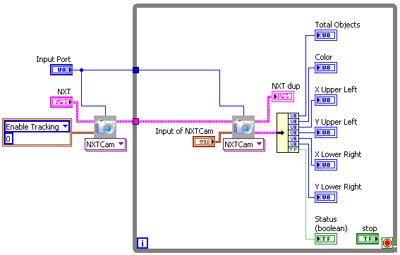

Inputs| Disable Tracking | stop the tracking, do this to conserve the battery power. |
| Get First Object | Upto 8 objects are tracked by NXTCam, for most applications first object is of utmost importance. |
| Get n th Object | For advanced applications to get a specific object. |
| Enable Tracking | when you are ready to start tracking your objects, this energizes the camera chip (consuming power) and begins processing the images. |
| Sort Objects by Size | the objects tracked could be of varying
sizes, this option sorts them by the size before while processing the
image. (Get First Object will return you the largest object). NXTCam
captures image
and
analyzes it, and extracts 8 object from that image which will match the
colors specified in colormap. Before returning the object info to you
(coordinates and color), this
command specifies how to sort them. (they are sorted by area of the
object seen). So first object will be the largest object seen by
NXTCam.
|
| Sort Objects by Colors | the objects tracked could be oc variying colors, this option sorts them by color while processing the image. (Get First Object will return you the object with color 1). The objects are sorted by the colors in the colormap. The objects matching color 1 will be in the beginning of the object array, followed by color 2... |
|
|
For future use. |
| Illumination off | For Future use. |
| Write Colormap | Write the Colormap to NXTCam memory. |
| Camera Settings | For advanced operations. |
| Line tracking mode | NXTCam supports Line Tracking mode and Object tracking mode. This option enables Line tracking mode. |
| Object tracking mode | This enables Object tracking mode on NXTCam. This is also the default mode (factory set). |

Sample located at
..\mindsesnors.com
LVEE\mindsensors.com Sample Programs\NXTCam-SP\NXTCam-Dual